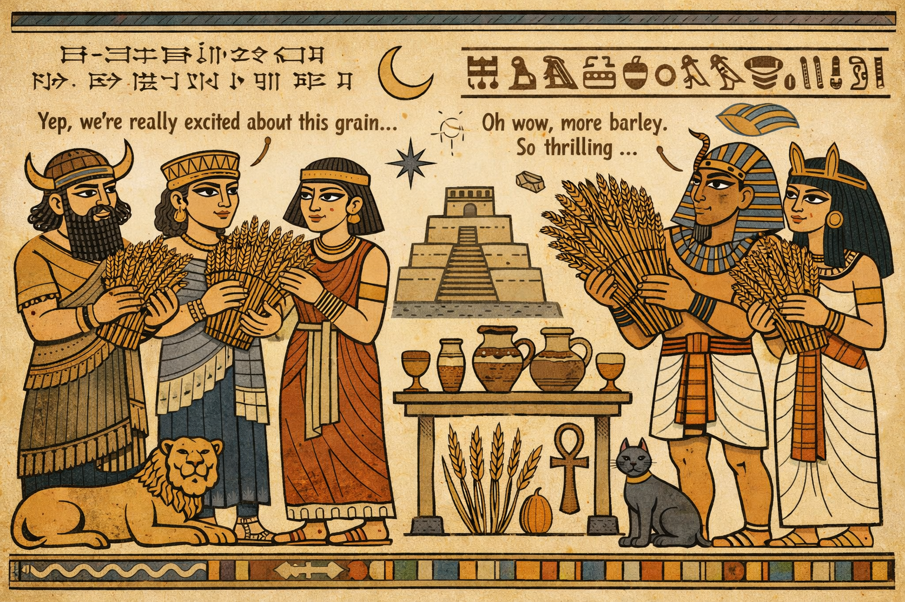

The Origins of Malts
Malts have a rich history that dates back centuries. They are made from grains that have been soaked, germinated, and dried, a process that enhances their flavor and sweetness. The use of malts is essential in brewing and distilling, contributing to the unique tastes of various beverages.
In ancient times, malting was a crucial step in the production of beer, with evidence of malt usage found in early civilizations such as the Sumerians and Egyptians. Over the years, the techniques and types of malts have evolved, leading to the diverse range of malts available today.
